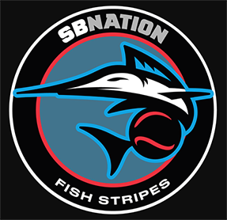
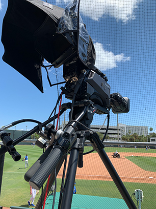
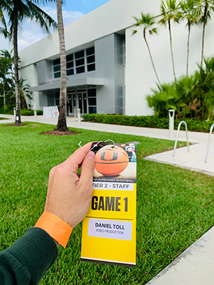
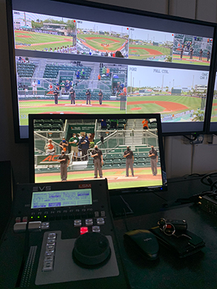

The content on this page includes my experiences with journalism prior to beginning college, as well as internships, jobs and projects that I have worked on relating to this field.
These experiences are ordered chronologically, dating back to my sophomore year of high school.
CAVSCONNECT
At the end of my freshman year of high school, I applied to CavsConnect - Coral Gables Senior High School's online news publication.
While I had never done any sort of journalistic writing or reporting beforehand, I had always had an affinity and passion for writing. I viewed the opportunity as one that would not only develop my writing skills, but also as one that would allow me to get more involved with my high school community.
I applied to the staff under the Staff Writer and Sports Editor positions, and was ultimately accepted as the publication's newest Sports Editor. I held the position for two years, and throughout that time, I attended several journalism conferences at the local, state and national levels. My personal favorite was the National Scholastic Press Association Convention in , which gave me the opportunity to travel to Chicago for the first time.
Photo Courtesy: CavsConnect
Going into my senior year, I knew that I wanted to pursue a career in journalism, so I applied for the Editor-in-Chief position. I was incredibly grateful to have received it, but there were several goals I was committed to working towards in my final year on the staff.
In each of my first two years with the publication, CavsConnect fell short of the Florida Scholastic Press Association's All-Florida recognition by one point. My goal was to lead my staff over that threshold for the first time in publication history.
Despite all of the struggles that the pandemic created late in the year, CavsConnect was not only named an All-Florida publication, but it was also awarded the 'Sunshine Standout' award for being the best online media publication in the state.
A year later, CavsConnect has continued to follow along their exemplary trajectory, and the staff recently won 'Sunshine Standout' for the second year in a row.
Click here to view my CavsConnect profile, where all of my articles throughout high school are accessible.
FISH STRIPES

Photo Courtesy: Fish Stripes
In the summer preceding my senior year, I interned with Fish Stripes as a Staff Writer. Fish Stripes is an online media outlet that covers the Miami Marlins through articles, social media and podcasts, and it is a subsidiary publication of the much larger Sports Blog Nation.
My internship with Fish Stripes lasted the entire summer, spanning across much of the Major League Baseball season, and throughout that time, I covered my hometown Marlins through analysis pieces and game recaps.
Towards the later end of my internship, I eventually started covering Marlins games live from the press box, which remains to this day one of the most surreal experiences of my life. Being able to watch and report on the games next to many of the people whose careers I've idolized since I was a child was an amazing opportunity for me, and I truly felt at home throughout every minute of it.
Click here to view my stories on Muck Rack, where all of my Fish Stripes articles are accessible.
THE MIAMI SPORTS NETWORK
In the summer of , I launched The Miami Sports Network, formerly named Beyond the Scoreboard: Miami. Using the skills I had learned through CavsConnect about web design and development, I created a website where I could publish my own articles, graphics and podcasts about Miami's sports teams.
The logo for The Miami Sports Network
While the process of putting the website together from scratch and designing it was time-consuming, it is fully functional and hosts a variety of sports-related content, including social media feeds, video embeds, stories and more.
In addition to the website, I have also run social media accounts for The Miami Sports Network on Instagram and Twitter. By running these accounts, I have had frequent practice with graphic design tools like Canva, Adobe Illustrator and Adobe Photoshop as I consistently try to make my graphics more eye-catching, clean, and bright.
My most recent endeavor with this project was the creation of a Miami Heat-based podcast called Culture Shock, which I co-host and produce with my lifelong friend, Anthony Russo.
HURRICANES PRODUCTION SERVICES
At the end of the Fall semester, I got a job working with Hurricanes Production Services at the University of Miami's Hecht Athletic Center.
In addition to being my first job, it was also the first time I was able to have broadcast production roles in a truly professional setting. At the Hecht Athletic Center, Miami Hurricanes' sports broadcasts are produced and shown on ESPN's ACC Network.
As a part of the production crew, I have worked a variety of roles, including Instant Replay Operator, Graphics Operator, and Cameraman.
Below are snapshots of some of my experiences on the job!

This was my camera station at Mark Light Field, the home of Hurricanes Baseball.

On my first day of work, I received a media credential to access the athletic facilities.

This is the instant replay operating equipment I use inside Control Room B of the Hecht Athletic Center.